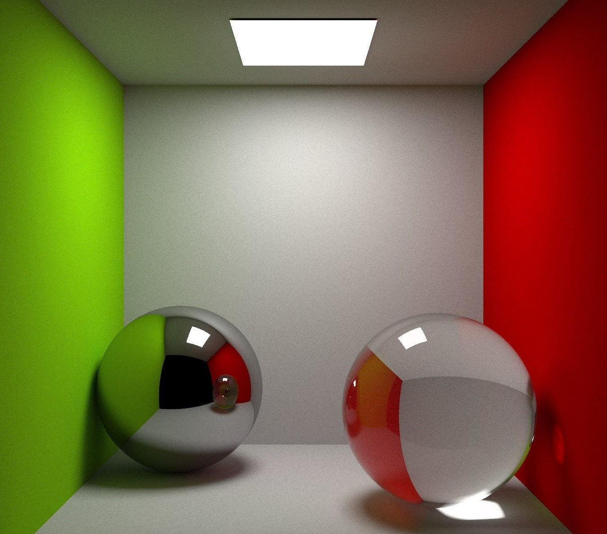
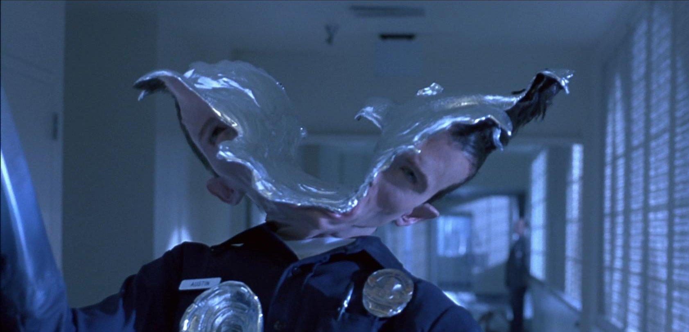

Эксперименты с компьютерной графикой начались еще в 1940-х, но каких-то адекватных результатов вышло достичь только в 60-х. В числе первых работ можно вспомнить ролик о вращении спутника вокруг Земли, созданный в Bell Laboratories в 1963 году, а также «Балет», выпущенный двумя годами позднее и считающийся ранним примером трехмерной анимации. Советский Союз не оставался позади: важным достижением является «Кошечка» — творение советских программистов 1968 года, плавность анимации которого до сих пор удивляет. Кошечка считается первым анимированным персонажем, полностью созданным с помощью компьютера.
Вплоть до 1973 года компьютерная анимация была уделом программистов, и лишь с появлением программного обеспечения от Atlas Computer Laboratory ситуация начала меняться. В их разработке Antics аниматоры могли использовать немалое количество привычных сегодня вещей, начиная от скелетной анимации (во многом схожей с традиционной перекладкой) и заканчивая применением интерполяции и простейших графических эффектов.
К 1980-м годам заметно продвинулось аппаратное обеспечение. В это же время графические программы становились все более сложными: Тернер Виттед ввел понятие трассировки лучей с устранением погрешностей дискретизации; Нельсон Макс создал несколько фильмов о молекулах и один из первых фильмов с анимированными волнами; Лорен Карпентер создал полет вокруг фрактального ландшафта и т.д.
Конечно же, только о трехмерной графике речь не шла: для студии Disney, продолжавшей создавать традиционные рисованные фильмы, компьютеры также стали большим подспорьем. Первым полнометражным мультфильмом, созданным в CAPS (Computer Animation Product System) стала «Русалочка»: вместо привычных целлулоидных пленок, дорогостоящих красок, чернил и ксерографии на помощь аниматорам пришли новейшие технологии, позволяющие рисовать сразу в цифровом виде, а различные настройки вроде прозрачности и смешения любых цветов и вовсе открывали новые возможности для художников: некоторые из новейших приемов можно увидеть, например, во время исполнения легендарной песни: обратите внимание на падающий на камни свет и мягкую подсветку пузырьков.
Очень важным направлением в компьютерной анимации является создание искусственного человека, неотличимого от настоящего. В этих фильмах качество анимации человека было таким, что для кинозрителей было очевидно, что персонаж нереален, и в этих фильмах компьютерные актеры играли второстепенные роли. Последние же достижения в моделях освещения и текстурирования позволяют много более реалистично моделировать человека.
Начинают выходить фильмы, в которых все чаще используются компьютерные спецэффекты: имитация торнадо системой частиц, превращения в вампиров, летающие персонажи, персонажи без ног и т.д. 1993 год - выход «Jurassic Park» с анимированными моделями динозавров, 1995 год - выход «Jumanji» с моделями как реальных, так и выдуманных животных.
Пожалуй, самым громким прорывом в современной анимации можно считать выход «Истории игрушек» 1995 года: этот полнометражный мультфильм студии Pixar положил начало засилью трехмерной анимации на экране и постепенному отмиранию плоской. «История игрушек» стала продолжением идей, заложенных еще в «Жестяной игрушке» 1988 года: именно там у Джона Лассетера появилась мысль сделать игрушки героями собственной истории.
Pixar буквально открыл ящик Пандоры: именно «История игрушек» показала огромный потенциал трехмерной анимации как самостоятельного медиума, а не только способа создания спецэффектов (к этому времени уже успели выйти «Терминатор 2: Судный день», «Трон» и «Парк Юрского периода»: все они сочетали практические эффекты и компьютерную графику). В дальнейшем самые крупные достижения закрепятся именно за Pixar, а практически каждый следующий проект будет добавлять новые технологии.